Catamarca
Paisajes y caminos para descubrir
Una mirada a los lugares que inspiran los recorridos de Horizontes de Altura.


Descubrí Catamarca a tu manera. Coordinamos traslados privados, recorridos personalizados y experiencias 4x4 desde nuestra base en Catamarca.
Un recorrido conversado desde el comienzo
Desde los traslados privados hasta las experiencias 4x4, cada recorrido se conversa para que el paisaje también sea parte de tu viaje.
Coordiná un traslado privado desde el aeropuerto hacia Fiambalá u otro destino acordado. Consultanos con anticipación para confirmar disponibilidad y condiciones.
La Toyota Hilux nueva y la Ford Ranger nueva son protagonistas de una propuesta pensada para recorrer distintos paisajes de Catamarca.
Contanos qué lugares te interesan y conversemos sobre una experiencia privada. El itinerario, el acceso y las condiciones se confirman antes de cada reserva.
“El camino es parte del destino”. Explorá Catamarca con un recorrido conversado desde el comienzo.
Horizontes de Altura · Catamarca, ArgentinaDe la cordillera a las dunas, cada lugar ofrece otra forma de encontrarse con el paisaje. Consultá qué destinos pueden formar parte de tu recorrido.
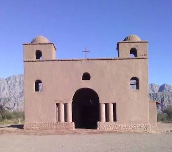
Punto 01Un recorrido por la arquitectura de adobe y la historia de las localidades del oeste catamarqueño.
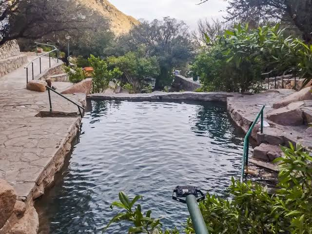
Punto 02Aguas termales en un entorno de quebrada. Consultá por acceso y condiciones para la fecha de tu viaje.
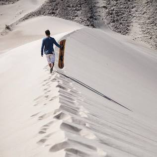
Punto 03Un paisaje de arena que invita a contemplar el desierto catamarqueño y sus formas cambiantes.
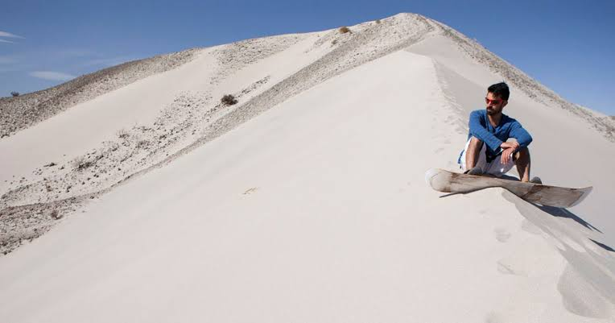
Punto 04Extensiones de arena y relieve desértico que muestran otra cara del paisaje de la región.
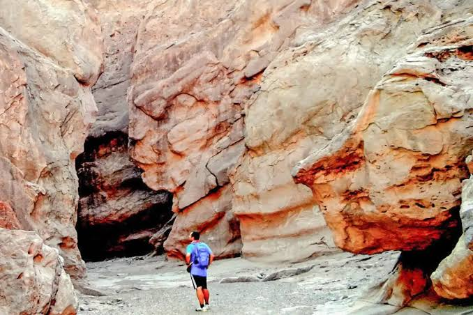
Punto 05Formaciones rocosas y tonos rojizos que convierten el paso por el cañón en una experiencia visual.
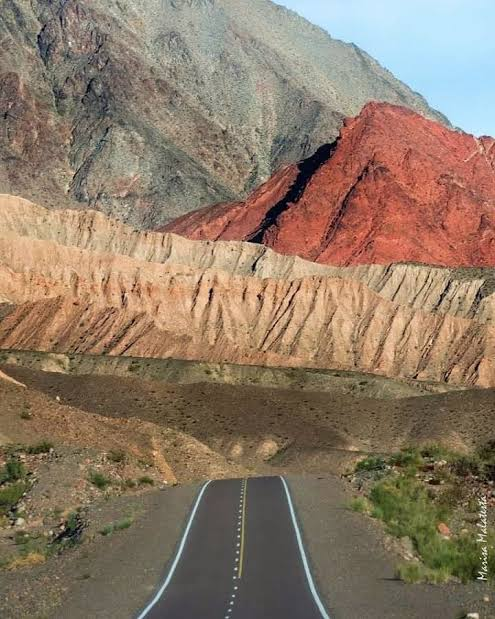
Punto 06Un camino entre quebradas y variaciones de relieve que invita a mirar el trayecto con atención.
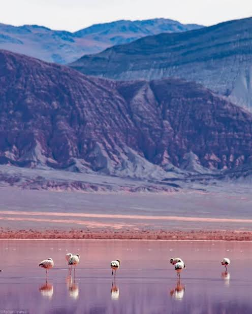
Punto 07Un paraje de la Puna catamarqueña para descubrir la amplitud y los contrastes de la altura.
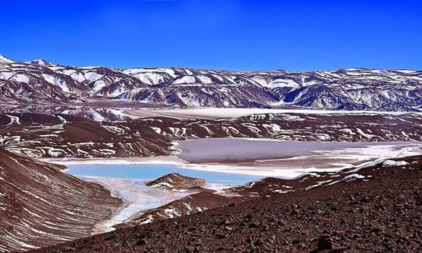
Punto 08Una ruta de alta montaña marcada por volcanes y algunos de los paisajes más imponentes de Catamarca.
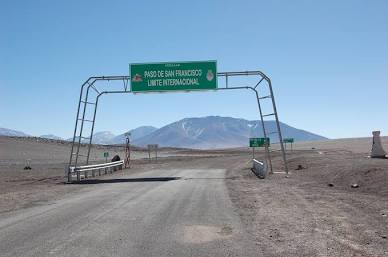
Punto 09Un paso cordillerano entre Argentina y Chile. El acceso y las condiciones deben confirmarse para cada fecha.
Compartinos origen, destino, fecha e intereses. Horizontes de Altura confirma disponibilidad, itinerario y condiciones antes de que reserves.
Compartí tu aeropuerto o punto de partida, destino, fecha y cantidad de pasajeros para iniciar la consulta.
Indicá qué paisajes te interesan. Las paradas y el recorrido se acuerdan según la consulta y las condiciones del destino.
Antes de reservar, confirmamos por WhatsApp la disponibilidad, el destino, el itinerario y las condiciones del servicio.
La Toyota Hilux y la Ford Ranger nuevas representan el espíritu explorador de Horizontes de Altura en recorridos privados y experiencias 4x4.
Escribinos para consultar tu traslado o experiencia. Te responderemos con la información disponible y los pasos para confirmar la reserva.
La Toyota Hilux nueva y la Ford Ranger nueva son parte de una propuesta de traslados privados, recorridos personalizados y experiencias 4x4. Cada itinerario se conversa y confirma antes de reservar.
Uno de los vehículos protagonistas de Horizontes de Altura para recorrer los paisajes de la región.
Un vehículo protagonista de la identidad exploradora de Horizontes de Altura.
Conversamos tus intereses, el destino y las condiciones antes de confirmar.
Una manera personal de acercarse a los caminos y paisajes de Catamarca.
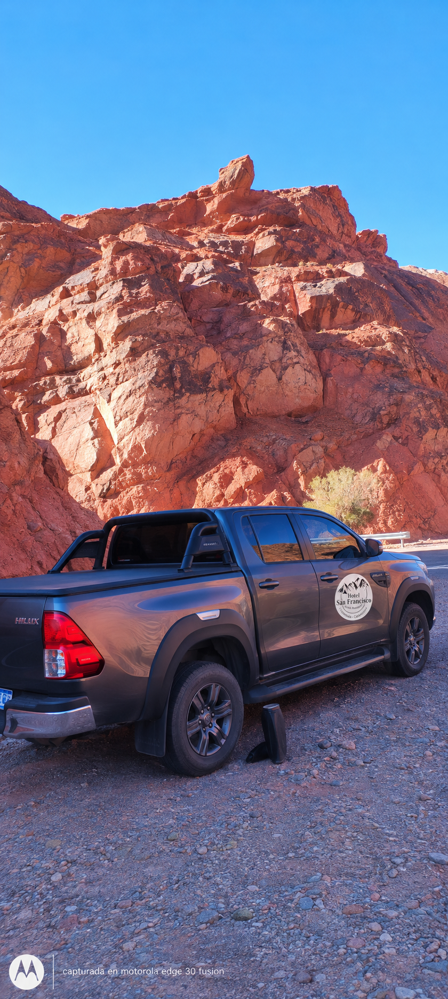
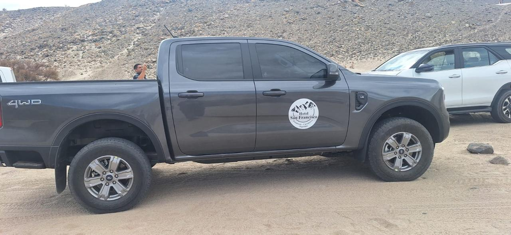
Mirá los paisajes y caminos de Catamarca en video.
Una mirada a los lugares que inspiran los recorridos de Horizontes de Altura.
Contanos qué viaje tenés en mente y consultá disponibilidad directamente con Horizontes de Altura por WhatsApp (+54 9 383 457-1075).